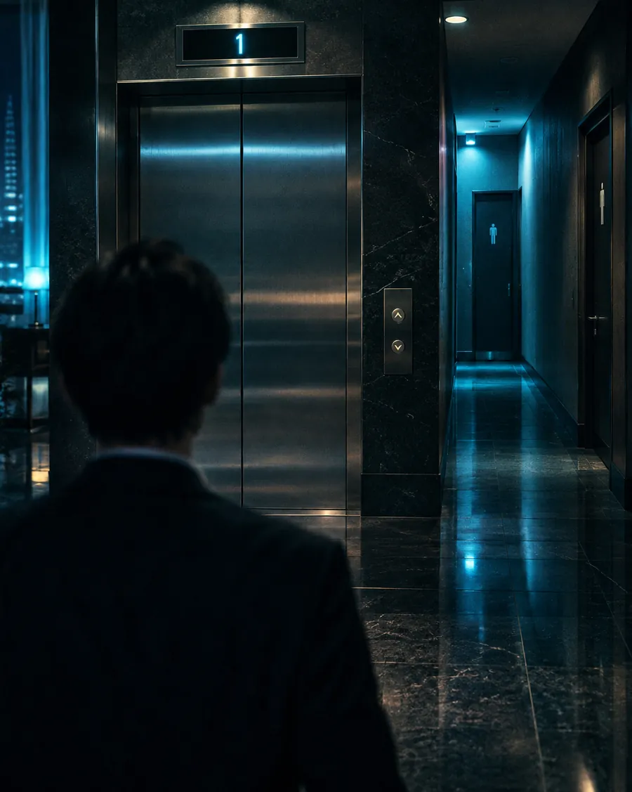

未解決ファイル
- 図面と証拠で解く推理クイズ -
捜査記録
English
REOPENED

今夜の未解決ファイル
瞬間移動する新人
高層ホテルで働く新人ベルボーイの久米は、ありえない場所に先に現れる。先輩たちは「瞬間移動」を疑うが……。
ファイルを開く
すべて表示（100件）
新着の未解決ファイル
四人の証言と一人の犯人
★★★
約10分
三×四の部屋の対角線
★☆☆
約4分
三本の棒の三角形
★★☆
約4分
本物のバーコード
★★★
約8分
すべて表示（9件）
密室事件
閂をうごかす力
★★☆
約5分
ドアの下のすきま
★★☆
約5分
外に散らばったガラス
★☆☆
約3分
片道だけの足跡
★★☆
約5分
すべて表示（39件）
日常の謎
三×四の部屋の対角線
★☆☆
約4分
三本の棒の三角形
★★☆
約4分
六十四人のトーナメント
★☆☆
約3分
三文字ずらした暗号
★☆☆
約4分
すべて表示（11件）
盗難事件
本物のバーコード
★★★
約8分
十の山と一回の計量
★★★
約8分
定員を超える荷物
★★☆
約5分
三つの目が見える賽
★☆☆
約3分
すべて表示（41件）
論理パズル
四人の証言と一人の犯人
★★★
約10分
十三日は何曜日
★★☆
約4分
三本の線で切った円
★★☆
約5分
暗闇の靴下
★☆☆
約3分
難易度から選ぶ
初級 ★☆☆
中級 ★★☆
上級 ★★★
プライバシーポリシー
削除依頼・お問い合わせ
© 未解決ファイル - 図面と証拠で解く推理クイズ -